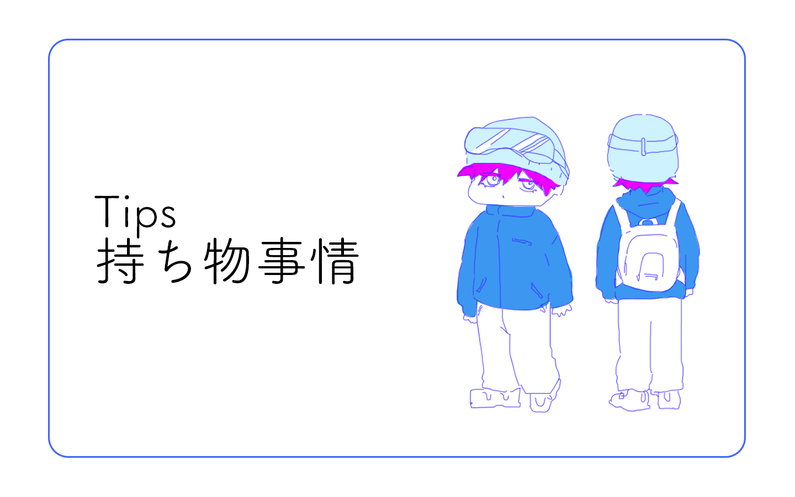
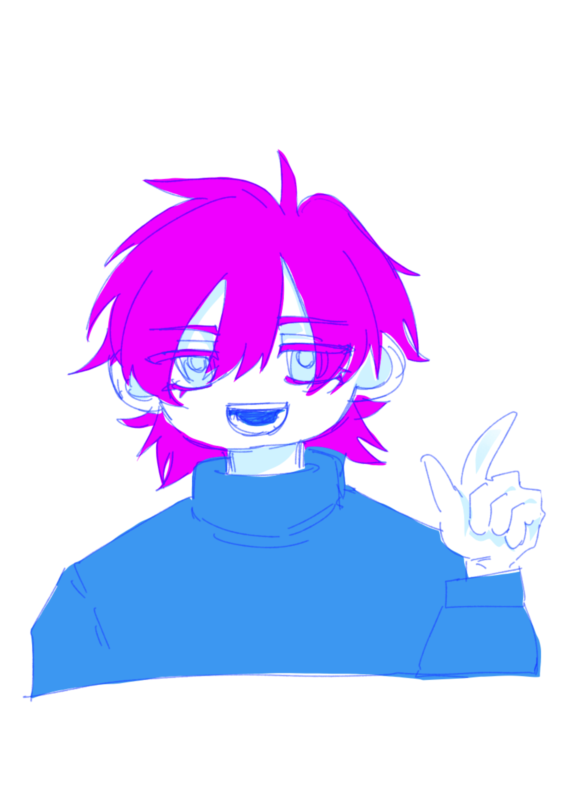

基礎知識QA Tips 持ち物事情

スキー場って何を持っていくべきなんだろう...
正解はないと思いますが、私がいつも持っていくものを参考程度にご紹介します。
いつも使っているもの
・日焼け止め
晴れた日は雪で反射した太陽光で日焼けをするので必須
・鎮痛剤
山は気候の変化が激しいので偏頭痛持ちには必須です。これに限らず普段使っている薬類は持って置くことをおすすめします。
・財布
スキー場はキャッシュレス未対応のところが多いです！現金を持っていきましょう！本当に現金しか使えません！！
・小さいペットボトル
寒いと水分取るの忘れがちなので、小さくて細長いペットボトル一本をポケットに入れると安心感がすごいです
・モバイルバッテリー
スマホは寒さで爆速でバッテリーがなくなっていきます。モバイルバッテリーは本当に必須です。
・スキー場の地図
スマホでいいだろ！と思いかもしれませんが、キャリアによっては山では繋がりません。物理の地図を持っておくと安心です。
・サングラス
春スキー限定ですが、暑すぎてゴーグルが曇る事があるので折りたたみ式のサングラスがあると便利です
その他
・絆創膏
・ハンカチ
・ティッシュ
この間、賢いなと思ったのは使い捨てのスリッパをレストランで履いていた方がいました。
スキーブーツって性質上、硬いし痛いしでリラックスできないのでスリッパがあるとすごく便利だな...と思いました。

リュックもアリだけど薄いものがいいと思います！リフトの椅子部分に引っかかるので！